| Safe Haskell | None |
|---|---|
| Language | Haskell2010 |
OpenCV.ImgProc.Drawing
- data LineType
- data Font = Font {
- _fontFace :: !FontFace
- _fontSlant :: !FontSlant
- _fontScale :: !Double
- data FontFace
- data FontSlant
- data ContourDrawMode
- arrowedLine :: (IsPoint2 fromPoint2 Int32, IsPoint2 toPoint2 Int32, ToScalar color, PrimMonad m) => Mut (Mat (S '[height, width]) channels depth) (PrimState m) -> fromPoint2 Int32 -> toPoint2 Int32 -> color -> Int32 -> LineType -> Int32 -> Double -> m ()
- circle :: (PrimMonad m, IsPoint2 point2 Int32, ToScalar color) => Mut (Mat (S '[height, width]) channels depth) (PrimState m) -> point2 Int32 -> Int32 -> color -> Int32 -> LineType -> Int32 -> m ()
- ellipse :: (PrimMonad m, IsPoint2 point2 Int32, IsSize size Int32, ToScalar color) => Mut (Mat (S '[height, width]) channels depth) (PrimState m) -> point2 Int32 -> size Int32 -> Double -> Double -> Double -> color -> Int32 -> LineType -> Int32 -> m ()
- fillConvexPoly :: (PrimMonad m, IsPoint2 point2 Int32, ToScalar color) => Mut (Mat (S '[height, width]) channels depth) (PrimState m) -> Vector (point2 Int32) -> color -> LineType -> Int32 -> m ()
- fillPoly :: (PrimMonad m, IsPoint2 point2 Int32, ToScalar color) => Mut (Mat (S '[height, width]) channels depth) (PrimState m) -> Vector (Vector (point2 Int32)) -> color -> LineType -> Int32 -> m ()
- polylines :: (PrimMonad m, IsPoint2 point2 Int32, ToScalar color) => Mut (Mat (S '[height, width]) channels depth) (PrimState m) -> Vector (Vector (point2 Int32)) -> Bool -> color -> Int32 -> LineType -> Int32 -> m ()
- line :: (PrimMonad m, IsPoint2 fromPoint2 Int32, IsPoint2 toPoint2 Int32, ToScalar color) => Mut (Mat (S '[height, width]) channels depth) (PrimState m) -> fromPoint2 Int32 -> toPoint2 Int32 -> color -> Int32 -> LineType -> Int32 -> m ()
- getTextSize :: Text -> Font -> Int32 -> (Size2i, Int32)
- putText :: (PrimMonad m, IsPoint2 point2 Int32, ToScalar color) => Mut (Mat (S '[height, width]) channels depth) (PrimState m) -> Text -> point2 Int32 -> Font -> color -> Int32 -> LineType -> Bool -> m ()
- rectangle :: (PrimMonad m, ToScalar color, IsRect rect Int32) => Mut (Mat (S '[height, width]) channels depth) (PrimState m) -> rect Int32 -> color -> Int32 -> LineType -> Int32 -> m ()
- drawContours :: (ToScalar color, PrimMonad m) => Vector (Vector Point2i) -> color -> ContourDrawMode -> Mut (Mat (S '[h, w]) channels depth) (PrimState m) -> m ()
Documentation
Constructors
| LineType_8 | 8-connected line. |
| LineType_4 | 4-connected line.
|
| LineType_AA | Antialiased line.
|


Constructors
| Font | |
Fields
| |
Constructors
| FontHersheySimplex | Normal size sans-serif font. Does not have a |
| FontHersheyPlain | Small size sans-serif font.
|
| FontHersheyDuplex | Normal size sans-serif font (more complex than
|
| FontHersheyComplex | Normal size serif font. 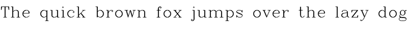 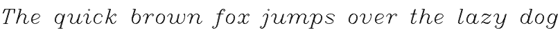 |
| FontHersheyTriplex | Normal size serif font (more complex than
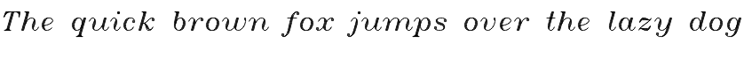 |
| FontHersheyComplexSmall | Smaller version of 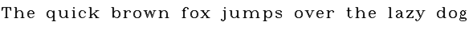 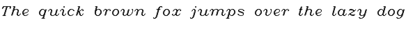 |
| FontHersheyScriptSimplex | Hand-writing style font. Does not have a
|
| FontHersheyScriptComplex | More complex variant of
|


data ContourDrawMode Source #
Constructors
| OutlineContour LineType Int32 | Thickness of lines the contours are drawn with. |
| FillContours | Draw the contour, filling in the area. |
Arguments
| :: (IsPoint2 fromPoint2 Int32, IsPoint2 toPoint2 Int32, ToScalar color, PrimMonad m) | |
| => Mut (Mat (S '[height, width]) channels depth) (PrimState m) | Image. |
| -> fromPoint2 Int32 | The point the arrow starts from. |
| -> toPoint2 Int32 | The point the arrow points to. |
| -> color | Line color. |
| -> Int32 | Line thickness. |
| -> LineType | |
| -> Int32 | Number of fractional bits in the point coordinates. |
| -> Double | The length of the arrow tip in relation to the arrow length. |
| -> m () |
Draws a arrow segment pointing from the first point to the second one
Example:
arrowedLineImg :: Mat (ShapeT [200, 300]) ('S 4) ('S Word8)
arrowedLineImg = exceptError $
withMatM
(Proxy :: Proxy [200, 300])
(Proxy :: Proxy 4)
(Proxy :: Proxy Word8)
transparent $ imgM -> do
arrowedLine imgM (V2 10 130 :: V2 Int32) (V2 190 40 :: V2 Int32) blue 5 LineType_AA 0 0.15
arrowedLine imgM (V2 210 50 :: V2 Int32) (V2 250 180 :: V2 Int32) red 8 LineType_AA 0 0.4
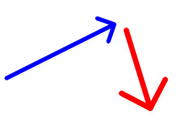
Arguments
| :: (PrimMonad m, IsPoint2 point2 Int32, ToScalar color) | |
| => Mut (Mat (S '[height, width]) channels depth) (PrimState m) | Image where the circle is drawn. |
| -> point2 Int32 | Center of the circle. |
| -> Int32 | Radius of the circle. |
| -> color | Circle color. |
| -> Int32 | Thickness of the circle outline, if positive. Negative thickness means that a filled circle is to be drawn. |
| -> LineType | Type of the circle boundary. |
| -> Int32 | Number of fractional bits in the coordinates of the center and in the radius value. |
| -> m () |
Draws a circle.
Example:
circleImg :: Mat (ShapeT [200, 400]) ('S 4) ('S Word8)
circleImg = exceptError $
withMatM
(Proxy :: Proxy [200, 400])
(Proxy :: Proxy 4)
(Proxy :: Proxy Word8)
transparent $ imgM -> do
lift $ circle imgM (V2 100 100 :: V2 Int32) 90 blue 5 LineType_AA 0
lift $ circle imgM (V2 300 100 :: V2 Int32) 45 red (-1) LineType_AA 0
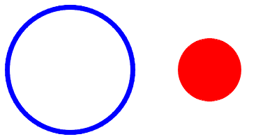
Arguments
| :: (PrimMonad m, IsPoint2 point2 Int32, IsSize size Int32, ToScalar color) | |
| => Mut (Mat (S '[height, width]) channels depth) (PrimState m) | Image. |
| -> point2 Int32 | Center of the ellipse. |
| -> size Int32 | Half of the size of the ellipse main axes. |
| -> Double | Ellipse rotation angle in degrees. |
| -> Double | Starting angle of the elliptic arc in degrees. |
| -> Double | Ending angle of the elliptic arc in degrees. |
| -> color | Ellipse color. |
| -> Int32 | Thickness of the ellipse arc outline, if positive. Otherwise, this indicates that a filled ellipse sector is to be drawn. |
| -> LineType | Type of the ellipse boundary. |
| -> Int32 | Number of fractional bits in the coordinates of the center and values of axes. |
| -> m () |
Draws a simple or thick elliptic arc or fills an ellipse sector
Example:
ellipseImg :: Mat (ShapeT [200, 400]) ('S 4) ('S Word8)
ellipseImg = exceptError $
withMatM
(Proxy :: Proxy [200, 400])
(Proxy :: Proxy 4)
(Proxy :: Proxy Word8)
transparent $ imgM -> do
lift $ ellipse imgM (V2 100 100 :: V2 Int32) (V2 90 60 :: V2 Int32) 30 0 360 blue 5 LineType_AA 0
lift $ ellipse imgM (V2 300 100 :: V2 Int32) (V2 80 40 :: V2 Int32) 160 40 290 red (-1) LineType_AA 0
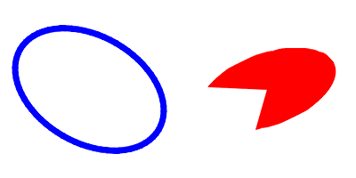
Arguments
| :: (PrimMonad m, IsPoint2 point2 Int32, ToScalar color) | |
| => Mut (Mat (S '[height, width]) channels depth) (PrimState m) | Image. |
| -> Vector (point2 Int32) | Polygon vertices. |
| -> color | Polygon color. |
| -> LineType | |
| -> Int32 | Number of fractional bits in the vertex coordinates. |
| -> m () |
Fills a convex polygon.
The function fillConvexPoly draws a filled convex polygon. This
function is much faster than the function fillPoly . It can fill
not only convex polygons but any monotonic polygon without
self-intersections, that is, a polygon whose contour intersects
every horizontal line (scan line) twice at the most (though, its
top-most and/or the bottom edge could be horizontal).
Example:
fillConvexPolyImg
:: forall (h :: Nat) (w :: Nat)
. (h ~ 300, w ~ 300)
=> Mat (ShapeT [h, w]) ('S 4) ('S Word8)
fillConvexPolyImg = exceptError $
withMatM (Proxy :: Proxy [h, w])
(Proxy :: Proxy 4)
(Proxy :: Proxy Word8)
transparent $ imgM -> do
lift $ fillConvexPoly imgM pentagon blue LineType_AA 0
where
pentagon :: V.Vector (V2 Int32)
pentagon = V.fromList
[ V2 150 0
, V2 7 104
, V2 62 271
, V2 238 271
, V2 293 104
]
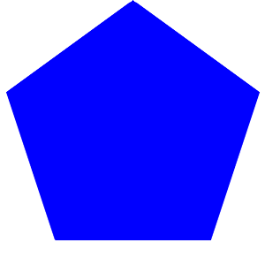
Arguments
| :: (PrimMonad m, IsPoint2 point2 Int32, ToScalar color) | |
| => Mut (Mat (S '[height, width]) channels depth) (PrimState m) | Image. |
| -> Vector (Vector (point2 Int32)) | Polygons. |
| -> color | Polygon color. |
| -> LineType | |
| -> Int32 | Number of fractional bits in the vertex coordinates. |
| -> m () |
Fills the area bounded by one or more polygons.
Example:
rookPts :: Int32 -> Int32 -> V.Vector (V.Vector (V2 Int32))
rookPts w h = V.singleton $ V.fromList
[ V2 ( w `div` 4) ( 7*h `div` 8)
, V2 ( 3*w `div` 4) ( 7*h `div` 8)
, V2 ( 3*w `div` 4) (13*h `div` 16)
, V2 ( 11*w `div` 16) (13*h `div` 16)
, V2 ( 19*w `div` 32) ( 3*h `div` 8)
, V2 ( 3*w `div` 4) ( 3*h `div` 8)
, V2 ( 3*w `div` 4) ( h `div` 8)
, V2 ( 26*w `div` 40) ( h `div` 8)
, V2 ( 26*w `div` 40) ( h `div` 4)
, V2 ( 22*w `div` 40) ( h `div` 4)
, V2 ( 22*w `div` 40) ( h `div` 8)
, V2 ( 18*w `div` 40) ( h `div` 8)
, V2 ( 18*w `div` 40) ( h `div` 4)
, V2 ( 14*w `div` 40) ( h `div` 4)
, V2 ( 14*w `div` 40) ( h `div` 8)
, V2 ( w `div` 4) ( h `div` 8)
, V2 ( w `div` 4) ( 3*h `div` 8)
, V2 ( 13*w `div` 32) ( 3*h `div` 8)
, V2 ( 5*w `div` 16) (13*h `div` 16)
, V2 ( w `div` 4) (13*h `div` 16)
]
fillPolyImg
:: forall (h :: Nat) (w :: Nat)
. (h ~ 300, w ~ 300)
=> Mat (ShapeT [h, w]) ('S 4) ('S Word8)
fillPolyImg = exceptError $
withMatM (Proxy :: Proxy [h, w])
(Proxy :: Proxy 4)
(Proxy :: Proxy Word8)
transparent $ imgM -> do
lift $ fillPoly imgM (rookPts w h) blue LineType_AA 0
where
h = fromInteger $ natVal (Proxy :: Proxy h)
w = fromInteger $ natVal (Proxy :: Proxy w)

Arguments
| :: (PrimMonad m, IsPoint2 point2 Int32, ToScalar color) | |
| => Mut (Mat (S '[height, width]) channels depth) (PrimState m) | Image. |
| -> Vector (Vector (point2 Int32)) | Vertices. |
| -> Bool | Flag indicating whether the drawn polylines are closed or not. If they are closed, the function draws a line from the last vertex of each curve to its first vertex. |
| -> color | |
| -> Int32 | Thickness of the polyline edges. |
| -> LineType | |
| -> Int32 | Number of fractional bits in the vertex coordinates. |
| -> m () |
Draws several polygonal curves
Example:
polylinesImg
:: forall (h :: Nat) (w :: Nat)
. (h ~ 300, w ~ 300)
=> Mat (ShapeT [h, w]) ('S 4) ('S Word8)
polylinesImg = exceptError $
withMatM (Proxy :: Proxy [h, w])
(Proxy :: Proxy 4)
(Proxy :: Proxy Word8)
transparent $ imgM -> do
lift $ polylines imgM (rookPts w h) True blue 2 LineType_AA 0
where
h = fromInteger $ natVal (Proxy :: Proxy h)
w = fromInteger $ natVal (Proxy :: Proxy w)

Arguments
| :: (PrimMonad m, IsPoint2 fromPoint2 Int32, IsPoint2 toPoint2 Int32, ToScalar color) | |
| => Mut (Mat (S '[height, width]) channels depth) (PrimState m) | Image. |
| -> fromPoint2 Int32 | First point of the line segment. |
| -> toPoint2 Int32 | Scond point of the line segment. |
| -> color | Line color. |
| -> Int32 | Line thickness. |
| -> LineType | |
| -> Int32 | Number of fractional bits in the point coordinates. |
| -> m () |
Draws a line segment connecting two points.
Example:
lineImg :: Mat (ShapeT [200, 300]) ('S 4) ('S Word8)
lineImg = exceptError $
withMatM (Proxy :: Proxy [200, 300])
(Proxy :: Proxy 4)
(Proxy :: Proxy Word8)
transparent $ imgM -> do
lift $ line imgM (V2 10 130 :: V2 Int32) (V2 190 40 :: V2 Int32) blue 5 LineType_AA 0
lift $ line imgM (V2 210 50 :: V2 Int32) (V2 250 180 :: V2 Int32) red 8 LineType_AA 0
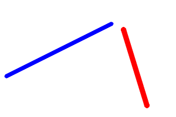
Arguments
| :: Text | |
| -> Font | |
| -> Int32 | Thickness of lines used to render the text. |
| -> (Size2i, Int32) | (size, baseLine) = (The size of a box that contains the specified text. , y-coordinate of the baseline relative to the bottom-most text point) |
Calculates the size of a box that contains the specified text
Arguments
| :: (PrimMonad m, IsPoint2 point2 Int32, ToScalar color) | |
| => Mut (Mat (S '[height, width]) channels depth) (PrimState m) | Image. |
| -> Text | Text string to be drawn. |
| -> point2 Int32 | Bottom-left corner of the text string in the image. |
| -> Font | |
| -> color | Text color. |
| -> Int32 | Thickness of the lines used to draw a text. |
| -> LineType | |
| -> Bool | When |
| -> m () |
Draws a text string.
The function putText renders the specified text string in the image. Symbols that cannot be rendered using the specified font are replaced by question marks.
Example:
putTextImg :: Mat ('S ['D, 'S 400]) ('S 4) ('S Word8)
putTextImg = exceptError $
withMatM (height ::: (Proxy :: Proxy 400) ::: Z)
(Proxy :: Proxy 4)
(Proxy :: Proxy Word8)
transparent $ imgM -> do
forM_ (zip [0..] [minBound .. maxBound]) $ (n, fontFace) ->
lift $ putText imgM
(T.pack $ show fontFace)
(V2 10 (35 + n * 30) :: V2 Int32)
(Font fontFace NotSlanted 1.0)
black
1
LineType_AA
False
where
height :: Int32
height = 50 + fromIntegral (30 * fromEnum (maxBound :: FontFace))
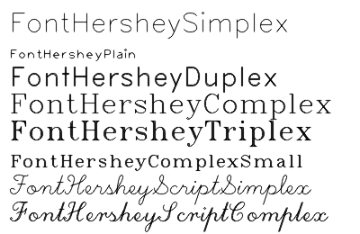
Arguments
| :: (PrimMonad m, ToScalar color, IsRect rect Int32) | |
| => Mut (Mat (S '[height, width]) channels depth) (PrimState m) | Image. |
| -> rect Int32 | |
| -> color | Rectangle color or brightness (grayscale image). |
| -> Int32 | Line thickness. |
| -> LineType | |
| -> Int32 | Number of fractional bits in the point coordinates. |
| -> m () |
Draws a simple, thick, or filled up-right rectangle
Example:
rectangleImg :: Mat (ShapeT [200, 400]) ('S 4) ('S Word8)
rectangleImg = exceptError $
withMatM (Proxy :: Proxy [200, 400])
(Proxy :: Proxy 4)
(Proxy :: Proxy Word8)
transparent $ imgM -> do
lift $ rectangle imgM (toRect $ HRect (V2 10 10) (V2 180 180)) blue 5 LineType_8 0
lift $ rectangle imgM (toRect $ HRect (V2 260 30) (V2 80 140)) red (-1) LineType_8 0

Arguments
| :: (ToScalar color, PrimMonad m) | |
| => Vector (Vector Point2i) | |
| -> color | Color of the contours. |
| -> ContourDrawMode | |
| -> Mut (Mat (S '[h, w]) channels depth) (PrimState m) | Image. |
| -> m () |
Draw contours onto a black image.
Example:
flowerContours :: Mat ('S ['S 512, 'S 768]) ('S 3) ('S Word8)
flowerContours = exceptError $
withMatM (Proxy :: Proxy [512,768])
(Proxy :: Proxy 3)
(Proxy :: Proxy Word8)
black $ imgM -> do
edges <- thaw $ exceptError $
cvtColor bgr gray flower_768x512 >>=
canny 30 20 Nothing CannyNormL1
contours <- findContours ContourRetrievalList
ContourApproximationSimple edges
lift $ drawContours (V.map contourPoints contours)
red
(OutlineContour LineType_AA 1)
imgM
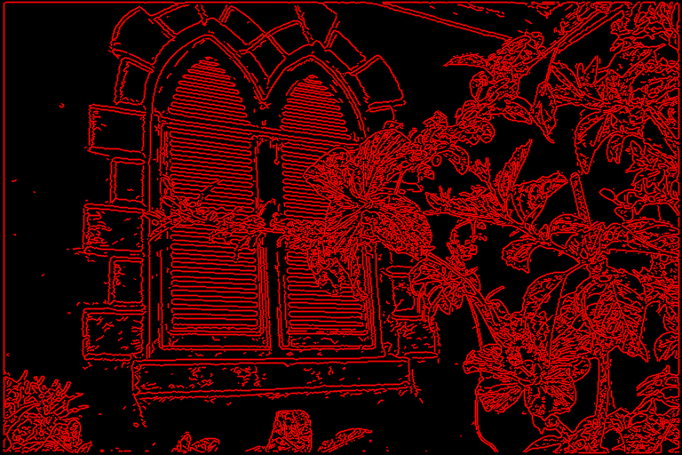